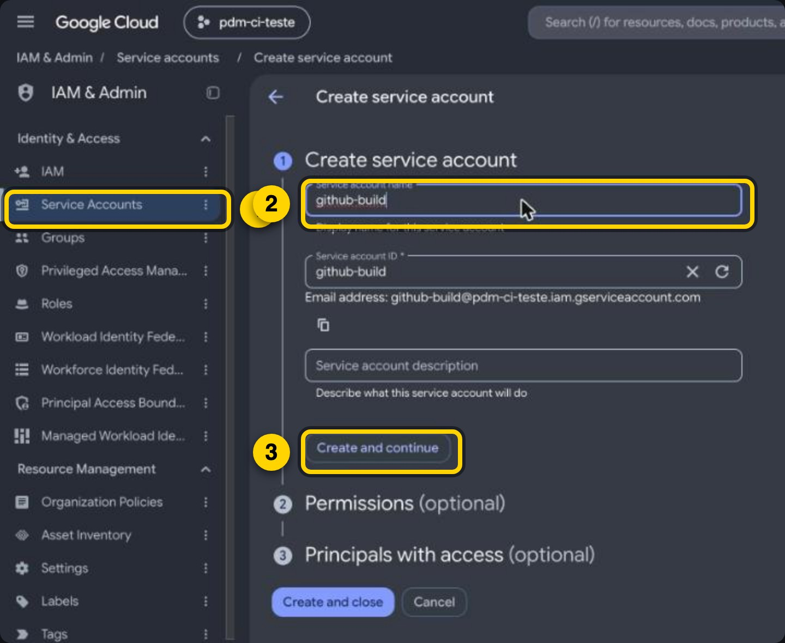
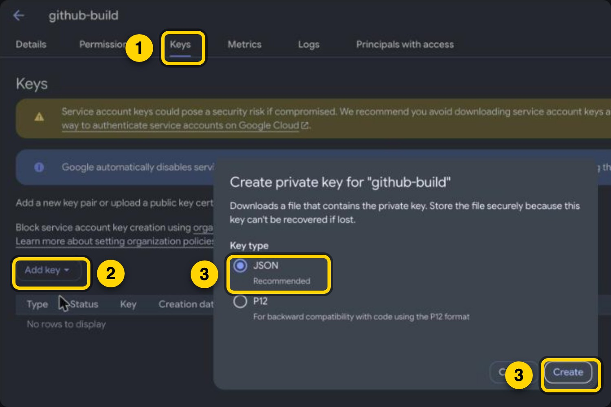
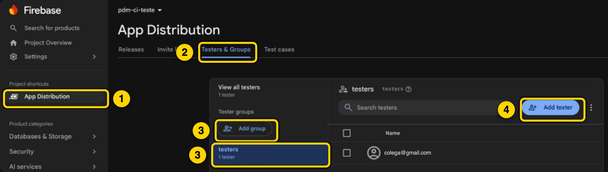

Lesson 28 · Week 12 · Monday, 23 November 2026 · 16:00 to 18:00
Platform channels and automated builds
Theory: how Flutter talks to Kotlin and Swift, three real cases, and what CI/CD is. Workshop: every commit on your project's main starts producing a signed APK on its own, in a GitHub Release.
No lesson repository: everything happens in the group project You need the key from Friday
Plan: 16:00 to 16:35 platform channels and the three cases; 16:35 to 16:50 CI/CD; 16:50 to 17:15 steps 1 to 3 (secrets, workflow, PR); the build takes about 10 minutes, and while it runs we go through the common errors; 17:25 to 17:40 the automatic Release on the phone and automatic Firebase (if it gets stuck, they skip to the icon); 17:40 to 17:50 the group icon; 17:50 to 18:00 final round. At the start: each group checks it has the computer with Friday's key (C:\dev\upload-keystore.jks) and the password. Whoever created the group repository has to be here, because only the owner can create secrets. Ekaterina, Inês and Palina's group does not have signing yet: they start with steps 1 to 4 from Friday and only then do this workshop.
By the end of this lesson you can
Explain what a platform channel is and when to use MethodChannel or EventChannel.
Recognise, in real apps, when Flutter needs native code and in what form.
Pick a package on pub.dev with criteria, before writing your own channel.
Tell CI from CD and say where a build's secrets live.
Have your group's app produce a signed APK on its own on every commit to main.
Platform channel: Dart asks, native answers
Flutter knows nothing about the phone: it asks the system, which only speaks Kotlin or Swift.
Everything travels as bytes, so only primitives, lists and maps go through.
The answer arrives in a Future: the screen does not wait.
On the web there is no Kotlin or Swift: MissingPluginException.
For the tests: asynchronous messages between Dart and native code; only primitives, lists and maps.
What to say: Flutter draws everything itself, but knows nothing about the phone. To get the battery, open the camera or read NFC it has to ask the system, and the system only speaks Kotlin or Swift. The channel is an interpreter between the two languages: messages travel in standard packets (the codec), one at a time, and the answer takes a while, so it arrives in a Future. The image_picker and geolocator you have already used are exactly this, with the work done by someone else. A wrong name is not a compile error: it is a MissingPluginException when the app runs. The name is the contract: it must be the same in Dart, Kotlin and Swift. In the figure: click to replay the trip, the ↑ and ↓ keys change mode (MethodChannel, EventChannel, web) and Z puts it full screen.
The Dart side: the call and the result
const channel = MethodChannel('pdm/battery');
Future<int?> batteryLevel() async {
if (kIsWeb) return null; // no native code on the web
try {
return await channel.invokeMethod<int>('level');
} on MissingPluginException {
return null; // platform without native code
} on PlatformException catch (e) {
debugPrint('Battery: ${e.code}'); // native said no
return null;
}
}What to say: on screen you show Text('Battery: $level %'), or nothing when it is null: an optional feature disappears quietly, it does not show "error". Two exceptions, two stories. MissingPluginException: nobody is on the other side (web, desktop, or a misspelt channel name). PlatformException: somebody is there, and answered with an error; the code is for deciding, the message is for the logs. To test without a phone, TestDefaultBinaryMessenger from flutter_test answers the channel with a fixed value, the way mocktail does with a repository. The imports: package:flutter/foundation.dart (for kIsWeb) and package:flutter/services.dart (for the channel).
The Android side, in Kotlin
override fun configureFlutterEngine(engine: FlutterEngine) {
super.configureFlutterEngine(engine)
val messenger = engine.dartExecutor.binaryMessenger
MethodChannel(messenger, "pdm/battery")
.setMethodCallHandler { call, result ->
if (call.method == "level") {
val bm = getSystemService(BATTERY_SERVICE)
as BatteryManager
result.success(bm.getIntProperty(
BatteryManager.BATTERY_PROPERTY_CAPACITY))
} else result.notImplemented()
}
}What to say: this is for reading, not memorising. The function goes inside class MainActivity : FlutterActivity(). The channel is registered once, when the Flutter engine starts, never inside a widget. call.method is the name Dart sent; result.success returns the value, and result.error("CODE", "message", null) reaches Dart as a PlatformException. The imports missing from the slide: android.os.BatteryManager, io.flutter.embedding.android.FlutterActivity, io.flutter.embedding.engine.FlutterEngine and io.flutter.plugin.common.MethodChannel. A change in Kotlin needs a new flutter run: hot reload only reloads Dart.
The iOS side, in Swift
func didInitializeImplicitFlutterEngine(
_ engineBridge: FlutterImplicitEngineBridge
) {
GeneratedPluginRegistrant.register(with: engineBridge.pluginRegistry)
let channel = FlutterMethodChannel(name: "pdm/battery",
binaryMessenger: engineBridge.applicationRegistrar.messenger())
channel.setMethodCallHandler { call, result in
if call.method == "level" {
UIDevice.current.isBatteryMonitoringEnabled = true
result(Int(UIDevice.current.batteryLevel * 100))
} else { result(FlutterMethodNotImplemented) }
}
}What to say: same idea, another language. The Flutter template you have already includes this function, empty (only the GeneratedPluginRegistrant line); the channel goes after it. Older examples online use window?.rootViewController in application(didFinishLaunchingWithOptions:): with the current template (scene-based iOS) that is nil. In the simulator batteryLevel is -1, so the app would show -100: on a phone it gives the right value. Without a Mac you cannot build for iOS; reading it is enough.
Ask once or keep listening
MethodChannel EventChannel
How Question and answer Stream: native tells you when it changes In Dart await invokeMethod(...)receiveBroadcastStream().listenBattery How much do you have now? Tell me when the charger is plugged in Plugins image_picker, local_authgeolocator, sensors_plusApps Picking a photo in Instagram A run in Strava, the Uber map
For the tests: MethodChannel is request and response, always asynchronous; EventChannel is a stream from native to Dart.
What to say: the question is "who starts the conversation?". With a MethodChannel it is always Dart: it asks, waits, receives. With an EventChannel Dart says "I am listening" and native speaks whenever it wants: the GPS position every second on a run, the accelerometer, the battery state. There is a third piece, BasicMessageChannel, for loose messages both ways, rarely used by hand. A MethodChannel can also be called from native to Dart (invokeMethod on the Kotlin side): we will see that in one of the real cases.
Real case 1: migrating without losing data
Before: native app, since 2008
Each platform its own way
Local storage
settings, favourite teams
Secure storage
the user's session (token)
update
After: Flutter app
One channel: «legacy storage»
Dart asks "read the old session"
native fetches it where it was
Dart saves it in the new place
the user does not even notice
OneFootball: millions of users with data saved by the old app
Flutter packages (shared_preferences, flutter_secure_storage) save with their own names and formats: they cannot find what the old app wrote.
What to say (a case from the lecturer's work at OneFootball): the football app had been native since 2008 and moved to Flutter. If the first Flutter version had asked everyone to log in again and forgotten their favourite teams, users would have been lost on update day. The data sat in each platform's local and secure storage, each with its own keys. A concrete example of why: shared_preferences on Android adds the prefix flutter. to every key, so it never reads a key written by the old app. The solution was a channel giving unified access to that storage: Dart asks, Kotlin and Swift fetch it where it was, and Dart moves the data to the new place. No channel, no migration.
Real case 2: the profile as a stream
Before: every screen asks every so often
Home, News, Settings: "has the profile changed?" every few seconds
repeated calls, battery drained, and each screen with a different version
After: one stream, with replay
Native
keeps the last profile
and reports changes
A screen starts listening
gets the current profile at once (the replay)
and then only the changes
An EventChannel keeps nothing: whoever starts listening after the last event gets no data until the next change.
What to say (OneFootball): the user profile (teams, language, session) lived on the native side, and every Flutter feature polled it, that is, asked every so often. It became a stream over a channel: whoever wants the profile listens, and gets it when it changes. The problem: a screen opening halfway through got nothing until the next change, because the channel does not repeat the last event. The fix was replay: keep the last value and hand it to whoever starts listening. It is the same as an RxDart BehaviorSubject, or a ValueNotifier: newcomers get the current value straight away. Link to what they know: the project's ChangeNotifier does this on the Dart side.
Real case 3: video calls and Apple Watch
Flutter consultation screen
Call video
native Amazon Chime view
platform view: no Flutter SDK
Chat button
Flutter says: open
Waiting room
native says: done
Call events
EventChannel: connected,
dropped, doctor joined
Apple Watch
heart rate to the app
audio play and pause
to the watch
With no Flutter SDK, the video comes from native code and sits inside the screen as a platform view .
What to say (Nue Life, a project the lecturer worked on in 2023): a mental health app with video consultations. The video provider, Amazon Chime, only had SDKs for Android and iOS. The solution had three channels. 1) The video is a native view embedded in the Flutter screen (a UiKitView on iOS), with Flutter buttons on top. 2) A two-way MethodChannel: Flutter says "open the chat", native says "the waiting room is over, the doctor has joined" (native calls invokeMethod on Dart). 3) Another channel talks to the Apple Watch through WatchConnectivity: heart rate comes from the watch to the app, and audio play and pause go from the app to the watch. Lesson: when a provider has no Flutter SDK, it is not a dead end, it is a week of native work.
Other ways to talk to native code
What it is Examples
Plugin A channel packaged and shared on pub.dev camera, url_launcherFederated plugin One interface and one package per platform shared_preferencesPlatform view A native widget inside the Flutter screen Google Maps, WebView, ads FFI Calling C or Rust directly, no channel sqlite3, cryptography
For the tests: a channel for system APIs; FFI for C libraries and performance; a platform view for a native widget; a federated plugin is one interface with an implementation per platform.
What to say: in practice, the first step is always to look for a plugin. Write a channel only when there is none, as with Chime. Federated plugin: shared_preferences is really several packages (_android, _foundation, _web), and someone can add Windows without touching the main one. Platform view: google_maps_flutter is Google's native map inside the screen, and it costs performance; the flutter_map you used draws the tiles in Dart, it is not a platform view. FFI: no messages and no serialisation, microseconds instead of milliseconds; the sqlite3 package uses FFI and is faster than sqflite, which uses a channel. The cost of FFI: memory managed by hand and compiling the library for each architecture.
Before you install a package
Check Where Warning sign
Pub points Package card, up to 160 Below 120 Usage Downloads and likes Hardly anyone uses it Maintenance Latest version, issues A year without a release Who publishes Verified publisher No website or organisation Licence License tab GPL, or none
Final rule: if you can write it in 50 lines, do not install it.
What to say: every package is someone else's code inside your app, with permissions and with its own dependencies. An abandoned plugin breaks the day Android or iOS changes something, and you are left with the problem. Open battery_plus on pub.dev live (publisher fluttercommunity.dev, widely used, up to date) and compare it with the channel we saw: for the project, the plugin wins. GPL: it forces you to publish the whole app's code. flutter pub deps shows what each package brings along.
CI (continuous integration) and CD (continuous delivery)
PR
your code
CI
analyze and test
merge
into main
CD
signed APK
GitHub Release with the APK
and, optionally, Firebase testers
a new build on every commit
You have had it since sprint 1
the ci.yml file
tells you the code is healthy
For the tests: CI checks every change; CD builds and delivers a version for every accepted change.
What to say: CI, continuous integration: every PR is checked automatically and tells you the code is healthy. CD, continuous delivery: every merge produces an installable version and tells you which version testers have. On Friday you did everything by hand: a build on one of your computers, dragging the APK to GitHub and to Firebase. It works once. By the tenth time, someone forgets to bump the versionCode, or builds the wrong branch, or the classmate with the key is ill. In companies, every merge produces a build that the team and internal testers install the same day; a version goes to the store every so often, chosen from those builds. The tool is the same one your CI already uses: GitHub Actions. What changes is what the robot does at the end.
The key is not in the repository. How does it reach the build?
Your computer
upload-keystore.jks
the password
pdm.json
the key becomes text
(Base64) so it can be pasted
GitHub Secrets
KEYSTORE_BASE64
KEYSTORE_PASSWORD
PDM_JSON
encrypted: once saved,
nobody can read them
Build machine
recreates the .jks
writes key.properties
signs the APK
at the end, the machine
is wiped
For the tests: build secrets live in the CI secrets, never in the repository; the build recreates them on a temporary machine.
What to say: a secret is an encrypted repository variable; the build uses it, but the logs show ***. The .jks is binary: Base64 turns it into text so it fits in a text box, and the build turns it back into the file. Same principle as Friday, the secret never goes into git, except now the "group computer" is a GitHub machine that is born for the build and dies at the end. Not even you can read a secret again once saved: you can only replace it. Base64 is not encryption, it is just a way of writing bytes with letters and numbers; whoever has the text has the key, so do not paste it anywhere else. Only the repository owner (or an admin) sees the Settings menu where secrets are created.
The version number goes up on its own
Build pubspec.yaml versionCode GitHub Release
Friday, by hand 0.3.0+33 v0.3.01st commit today 0.3.0+3101 v0.3.0-build.1012nd commit 0.3.0+3102 v0.3.0-build.102Change to 0.4.0 0.4.0+3103 v0.4.0-build.103
The versionCode is 100 plus the GitHub build number. You only touch the 0.3.0, whenever you want.
What to say: remember Friday? Android refuses to install a lower versionCode over a higher one, and it only compares the number after the +. Forgetting to bump it is the classic mistake of hand-made builds. Here the robot uses the Actions build number (1, 2, 3...) and adds 100, so it is always above Friday's 3. That way every new APK installs over the previous one, without uninstalling and without losing the session. These Releases come out marked "Pre-release": Friday's v0.3.0 stays "Latest" until you decide to publish a proper version.
Who does this in companies
Tool What it is
GitHub Actions GitHub's robot: your CI, and today your CD Codemagic CI/CD made for Flutter, with Macs for iOS Bitrise CI/CD for mobile apps only Xcode Cloud Apple's CI/CD, for iOS fastlane Scripts to sign and upload to the stores
What changes from one to another is the syntax. The pieces are always the same: secrets, build, signing and delivery.
What to say: iOS needs a Mac for the build; GitHub has Macs, but a minute costs ten times a Linux minute, which is why many Flutter teams use Codemagic for iOS. fastlane is not a CI: it is a tool that runs inside any CI and knows how to talk to the Play Console and App Store Connect. In an internship interview, "I have set up a pipeline that signs and distributes the app on every merge" is worth more than another screen in the portfolio.
Workshop: a new APK on every commit
Step What By
1 The secrets on GitHub and pdm.json out of the code 17:10 2 The build.yml file in the project 17:15 3 PR, merge and the first automatic build 17:30 4 Firebase testers automatic too 17:40 5 The group icon, all the way to the testers' phones 17:50
One slide, one step. Only move on when you see what the green box says.
What to say: today's goal is step 3 done by everyone: a Release nobody made by hand. The build takes about 10 minutes: while it runs, look at the errors slide and get step 4 ready. In the final round each group shows the automatic Release and the Actions tab with the green tick on the projector.
Step 0: before you start
The group computer with Friday's key: C:\dev\upload-keystore.jks and android\key.properties.
Whoever created the group repository, signed in to GitHub: only the owner sees the Settings menu.
VS Code open on the project folder and, in the terminal, git checkout main and git pull.
You should see On GitHub, Friday's v0.3.0 Release. Without it, do steps 1 to 4 from Friday first.
What to say: today's workflow does not create the key or the signing, it only uses them. So it needs what you did on Friday: the signingConfigs in build.gradle.kts and the group's key. If the key only exists on the computer of someone who is absent, the group cannot do step 1 today: do step 2 and leave step 1 for when you have the key. On macOS: the key is at ~/upload-keystore.jks.
Step 1.1: the key as text
$bytes = [IO.File]::ReadAllBytes("C:\dev\upload-keystore.jks")
[Convert]::ToBase64String($bytes) | Set-Clipboard
Run both lines. Nothing appears: the text went to the clipboard.
Do not copy anything else until step 1.2.
You should see No error in the terminal. If you paste into an empty file, you get one very long line starting with MII.
What to say: Base64 writes the key's bytes with letters and numbers, so it fits in a GitHub text box. It is not encryption: this text is the key. Do not paste it in the group chat or in a project file. If you get "Could not find file", the key is somewhere else: it is on the storeFile line of android\key.properties. On macOS: base64 -i ~/upload-keystore.jks | pbcopy.
Step 1.2: the first secret
In the group repository: Settings , on the left Secrets and variables , Actions .
Green button New repository secret .
Name: KEYSTORE_BASE64
Secret: paste (Ctrl+V) and click Add secret .
You should see Under "Repository secrets", a KEYSTORE_BASE64 row, "Updated now".
What to say: the name has to be exactly this, in capitals: build.yml looks it up by that name. If there is no Settings tab, that person is not the repository owner: switch accounts or ask the owner to give you the admin role. If you pasted something else by mistake, click the secret's pencil and paste again; you cannot see what is there, only replace it.
Step 1.3: the password
In VS Code, open android\key.properties and copy what comes after storePassword=.
On GitHub, New repository secret again.
Name: KEYSTORE_PASSWORD, Secret: paste, Add secret .
You should see Two secrets in the list: KEYSTORE_BASE64 and KEYSTORE_PASSWORD.
What to say: copy only the password, without storePassword= and without trailing spaces. On Friday the key was created with a single password, so the key's own one (keyPassword) is the same: the build uses this one for both. If the group used different passwords, call the lecturer.
Step 1.4: the clientId leaves the code
final apiClient = ApiClient(
clientId: const String.fromEnvironment('CLIENT_ID'),
clientSecret: const String.fromEnvironment('CLIENT_SECRET'),
);
In VS Code, Ctrl+Shift+F and search for clientSecret:
If it shows up with the secret in quotes, replace both lines with the ones above.
If it already says fromEnvironment, leave it and go to 1.5.
You should see No pdm- and no secret in quotes in lib.
What to say: this is the sprint 3 rule, already in the project brief: API credentials only come in through pdm.json. With the secret written in the code, anyone with access to the repository can read it, and it stays in the git history forever. String.fromEnvironment reads what comes with the build; if nothing comes, it is an empty string. Groups that do not call the API on main find nothing: go to 1.5 anyway, because you will need pdm.json in sprint 3.
Step 1.5: pdm.json, only on your computer
{
"CLIENT_ID": "the clientId from issue #1 of the repository",
"CLIENT_SECRET": "the clientSecret from the same issue"
}
Create the file in VS Code and paste the values from issue #1. It is the same one from Wednesday, before the review: if you already have it, leave it.
Open .gitignore: the last line must be pdm.json.
Never in git pdm.json is never committed. If git status shows it, stop and call the lecturer.
What to say: pdm.json is the group's card for the API, like a company access badge. It lives in two places only: on each person's computer, to run the app, and on GitHub as a secret, so the robot can build the APK. Never in the repository. The template already has the pdm.json line in .gitignore; if someone deleted it, put it back. Everyone in the group who runs the app needs their own pdm.json: share it through issue #1, not the chat.
Step 1.6: the proof, in Chrome
flutter run -d chrome --dart-define-from-file=pdm.json
Run the app with pdm.json and log in with your account.
In the terminal, git status.
You should see The login going through. In git status, main.dart if you changed it, and never pdm.json.
Without the file, it does not work Without pdm.json, or without the flag, the clientId is empty and login gives 401.
What to say: F5 in VS Code does not pass the flag, so use the terminal, or add "args": ["--dart-define-from-file=pdm.json"] to launch.json. If you get 401: the file is not at the root, the names are not CLIENT_ID and CLIENT_SECRET in capitals, or the values are the sample ones from the slides.
Step 1.7: the same pdm.json, as a secret
Open pdm.json in VS Code, Ctrl+A, Ctrl+C.
On GitHub, New repository secret again.
Name: PDM_JSON, Secret: paste, Add secret .
You should see Three secrets: KEYSTORE_BASE64, KEYSTORE_PASSWORD and PDM_JSON.
What to say: it is not one or the other, it is both. The file serves your computer; the secret serves the GitHub machine, which does not have your computer, with the same text inside. build.yml writes pdm.json from this secret before the build. Without it, the robot writes {}: the APK opens, but login gives 401.
Step 2.1: a branch and the build file
git checkout -b build-automatico
mkdir -Force .github\workflows
$url = "https://tiago-rocha.github.io/pdm-aulas/aulas/aula-28-build.yml"
Invoke-WebRequest $url -OutFile .github\workflows\build.ymlYou should see In VS Code, on the left, .github, workflows, and inside the usual ci.yml and the new build.yml.
What to say: build.yml is the same for every group: it has nothing of yours, the secrets come from GitHub. That is why it is downloaded rather than copied from the slide, where a wrong YAML indent breaks everything. The file is shared with the Portuguese-speaking classmates, so its step names are in Portuguese. The main.dart changed in step 1.4 comes with you to the branch: that is normal, it goes in the same PR. On macOS: mkdir -p .github/workflows and curl -o .github/workflows/build.yml with the same address.
Where the magic happens 1: when it runs
on:
push:
branches: [main]
permissions:
contents: write
jobs:
apk:
runs-on: ubuntu-latest
steps:
- uses: subosito/flutter-action@v2
with:
flutter-version: 3.47.5Runs on every merge to main, creates Releases and uses the class's Flutter.
What to say: read only, do not change anything. on: push to main: it runs on every merge, not on every PR; ci.yml keeps looking after PRs. contents: write lets the robot create Releases. The excerpt has the lines that matter; the full file also has Java 17 and the cache, so the second build is faster. The Flutter version is pinned because with the latest one the project Flutter created in September no longer builds (it asks for a newer Android Gradle Plugin). That is a reproducible build: the same code gives the same APK today and a month from now.
Where the magic happens 2: the key
env:
KEYSTORE_BASE64: ${{ secrets.KEYSTORE_BASE64 }}
KEYSTORE_PASSWORD: ${{ secrets.KEYSTORE_PASSWORD }}
run: |
echo "$KEYSTORE_BASE64" | base64 -d > "$RUNNER_TEMP/upload.jks"
cat > android/key.properties <<FIM
storePassword=$KEYSTORE_PASSWORD
keyPassword=$KEYSTORE_PASSWORD
keyAlias=upload
storeFile=$RUNNER_TEMP/upload.jks
FIMWhat to say: this is where the magic happens. "A chave do grupo" is "The group's key". secrets.KEYSTORE_BASE64 is the secret from step 1.2; base64 -d turns it back into the .jks in a temporary folder. Then it writes the same key.properties you wrote by hand on Friday, only with the build machine's path. Gradle does not know it is on a robot: it reads key.properties just like on your computer.
Where the magic happens 3: the number
- name: APK de release
run: |
flutter build apk --release \
--build-number=$((100 + BUILD)) \
--dart-define-from-file=pdm.json
Friday's command, with the versionCode made by the robot: 100 plus the build number.
pdm.json comes from the PDM_JSON secret; without it, an empty {} goes in and login gives 401.
What to say: "APK de release" is "Release APK". BUILD is github.run_number, the Actions build number (1, 2, 3...), set at the top of the file. A step before this one writes pdm.json from the secret, or {} if the secret is missing, so the same file works for every group. This is the slowest step, about 8 minutes on the first build.
Where the magic happens 4: the Release
run: |
VERSAO=$(grep -oP '^version: \K[^+]+' pubspec.yaml)
N=$((100 + BUILD))
APK=build/app/outputs/flutter-apk/app-release.apk
cp "$APK" "app-$VERSAO-$N.apk"
git log -1 --format=%B > notas.txt
gh release create "v$VERSAO-build.$N" "app-$VERSAO-$N.apk" \
--target "$GITHUB_SHA" --prerelease \
--title "$VERSAO ($N)" --notes-file notas.txtThe Release notes are the last commit's message: PR titles become what testers read.
What to say: it is the same thing you did with clicks on Friday (tag, title, notes, APK), in one line with gh, GitHub's command-line tool. VERSAO is the version, notas.txt the notes. --target ties the tag to the exact commit of the build; --prerelease does not take the "Latest" spot from v0.3.0. When a PR is merged, the commit message is "Merge pull request #N" plus the PR title: write PR titles a tester can understand. At the end of the file there is one more step, Firebase, which only runs if the FIREBASE_APP_ID secret exists: that is step 4.
Step 3.1: the PR and the merge
git status: build.yml and, if you changed it in 1.4, main.dart. Never pdm.json.git add .github lib, a commit, for example Automatic APK build, and git push -u origin build-automatico.The PR on GitHub. A group mate reviews and approves.
Merge into main.
You should see The PR merged and, under "Files changed", build.yml and main.dart, with no pdm.json.
What to say: the build does not run on the PR, only after the merge, because only main reaches testers. If key.properties or pdm.json shows up in git status, stop: someone changed a .gitignore. CI (ci.yml) runs on the PR as always; in groups where it is red because of analyze warnings, that does not stop the build, they are two separate workflows.
Step 3.2: the robot at work
In the repository: the Actions tab.
At the top, the "Build" with your PR title and a yellow circle. Click it, then apk .
Open the steps: "A chave do grupo", "APK de release", "Release no GitHub".
You should see The steps turning green one by one. "APK de release" is the slowest: about 8 minutes.
What to say: this is the machine born for your build. Look for the "A chave do grupo" (the group's key) step and see that the password shows as ***: GitHub hides secrets in the logs. While you wait, each group reads the next slide, with the common errors. Later builds are faster, because Gradle and Flutter stay in the cache.
When the build turns red
The error says It means Fix
Keystore was tampered withWrong password Step 1.3 again base64: invalid inputKey pasted halfway Steps 1.1 and 1.2 again Alias name upload does not existThe key has another name Call the lecturer tag_name already existsA re-run of a build A new commit, not Re-run The app gives 401 on login PDM_JSON is missingStep 1.7 and a commit
After fixing a secret, the build does not run on its own: it needs a new commit on main.
What to say: the error is always in the red step: click it and read the last lines. "Alias name upload does not exist": on Friday the keytool command had -alias upload; if someone changed it, the keyAlias=upload line in build.yml has to change to the name in the group's key.properties. For a new commit without changing code: edit the README on GitHub and commit straight to main, or open a small PR. Re-run fails at the Release because the build number is the same, and the tag already exists.
Step 3.3: the Release nobody made
On the repository page, right-hand column: Releases .
At the top, the new Release, labelled "Pre-release".
You should see The 0.3.0 (101) Release, with your PR title in the notes and app-0.3.0-101.apk under Assets.
What to say: the number may be different (102, 103) if the workflow has run more times. From now on every merge gives a Release like this. The APK is the same size as Friday's: it is the same build, made by another machine, with the same key.
Step 3.4: the proof, on the phone
Download app-0.3.0-101.apk from the Release.
Emulator: drag the APK onto the window. Phone: copy it over the cable and open it in the file manager.
Open the app.
You should see The app updates over Friday's one, without uninstalling, and stays signed in.
What to say: this proves the robot's signature is yours. If Android says "App not installed" or "conflicts with an existing package", the APK was signed with another key: the KEYSTORE_BASE64 secret is not the group's key. Group repositories are private, so on a phone you can only download from the Release with a group member's GitHub account; for testers, the route is Firebase, in step 4.
Step 4.1: the Firebase App ID
Firebase, Friday's project: left menu, Settings , General .
Under "Your apps", copy the App ID (starts with 1:).
On GitHub, new secret FIREBASE_APP_ID: paste.
You should see The FIREBASE_APP_ID secret in the GitHub list.
What to say: the last step of build.yml only runs when this secret exists; until then it is skipped, and the build stays green anyway. The App ID is not really a secret (it ships inside the APK), but it lives with the others to keep things tidy. There is no longer a gear icon next to "Project Overview": it is the Settings item, below it, that opens a submenu.
Step 4.2: the same project in Google Cloud
console.cloud.google.com, with the same Google account as Firebase. At the top, the project button.Type the Firebase project name and click it.
You should see The Firebase project name on the button at the top.
What to say: a Firebase project is a Google Cloud project with the same name, so it is already there. If the console asks you to accept the terms, accept them. If it offers the "Free trial", an "Upgrade" or asks for a card: no. None of this needs billing.
Step 4.3: an account for the robot
Menu ☰ , IAM & Admin , Service Accounts .
Create service account . Name: github-build.Create and continue .
You should see "Permissions (optional)" open below.

What to say: the robot cannot sign in to Firebase with your Google account, so it gets an account of its own. The Service Accounts list already has a firebase-adminsdk one: it belongs to Firebase, it has too much power, do not use it. The "Service account ID" fills itself in.
Step 4.4: only what the robot needs
Role: type App Distribution and pick Firebase App Distribution Admin .
Continue .Done .
Careful Three similar ones show up. It is Admin , not Viewer and not "Admin SDK Service Agent".
You should see github-build in the list.
What to say: this is the principle of least privilege. If the secret leaks, whoever has it can only send APKs to your testers: they cannot delete the database or spend money. With Viewer the robot can only look, and the Firebase step goes red with "permission denied". The third part of the form stays empty. You may see "Policy updated. It may take a few minutes": that is normal.
Step 4.5: the robot's key
In the list, click github-build. Keys tab.
Add key , Create new key .JSON (already selected), Create .
You should see A .json in Downloads.

What to say: the file is called something like project-name-1a2b3c.json and starts with "type": "service_account". Google warns, in yellow, that these keys are dangerous: true, and that is why it goes into a secret and the file is deleted right after. There is no second copy: if you lose it, delete this key and create another one.
Step 4.6: the key in a secret
On GitHub, Settings .
Secrets and variables , Actions , New repository secret .Name FIREBASE_SERVICE_ACCOUNT. Open the .json in VS Code, Ctrl+A, Ctrl+C, and paste it all into Secret. Add secret .
You should see FIREBASE_APP_ID and FIREBASE_SERVICE_ACCOUNT in the list. Then delete the .json.
What to say: it is the whole file, from the first brace to the last. The robot writes it to a temporary file on every build and Firebase reads it from there. Delete the .json after pasting: it is a key. It never goes into the repository: Google disables keys that show up in public repositories on its own.
Step 4.7: the testers group
In Firebase, App Distribution , in the left menu.
Testers & Groups tab.Add group , name testers, in lower case, Save .Add tester : Friday's three testers, one by one.
You should see The testers group with three people. The next merge into main, the icon one, reaches them on its own.

What to say: the group name has to be testers, in lower case: that is what build.yml uses (Firebase shows the same name, in grey, next to the group title). Testers accepted the invitation on Friday, so the new version shows up in App Tester without them doing anything. Tested on 23/11 on a new Firebase project, with this build.yml: the robot uploaded the APK and the group got it. If you get a permissions error, show the red step to the lecturer; it is usually the wrong role from 4.4. If Firebase gets stuck, move on to step 5: the icon is for everyone.
Step 5.1: the group icon
A square PNG, 1024 by 1024, with no transparency.
It has to say who you are: your initials, the group colour, a drawing. Nobody can mistake your app for another group's.
In Figma: a 1024 by 1024 frame, Export , PNG .
You should see A .png file in Downloads that opens as a full square, with no transparency checkerboard.
What to say: the icon is today's final task, and it is how the lecturer knows whose app is whose on the testers' phones. It is also the first thing a user sees of an app, before opening it. Draw with a margin: Android crops the corners into a circle or a rounded square, and whatever touches the edge disappears. Transparency: Apple rejects icons with a transparent background, and the package in the next step removes it on iOS, and the transparent background turns white.
Step 5.2: a branch and the icon folder
git checkout main
git pull
git checkout -b icone
mkdir -Force assets\icon
flutter pub add dev:flutter_launcher_icons
Drag the PNG into the assets/icon folder in VS Code and rename it to icon.png.
You should see In VS Code, on the left, assets, icon, icon.png. One click and the square shows up.
What to say: git pull brings the build.yml merge, which was done on GitHub. Careful on Windows: with extensions hidden, renaming to icon.png in Explorer gives icon.png.png. VS Code shows the real name. The last line adds the package that generates the icons to pubspec.yaml. On macOS: mkdir -p assets/icon.
Step 5.3: the package that makes the icons
At the end of pubspec.yaml, flush left:
flutter_launcher_icons:
image_path: assets/icon/icon.png
android: true
ios: true
remove_alpha_ios: true
web:
generate: trueYou should see flutter_launcher_icons twice: under dev_dependencies and in the block at the end.
What to say: it is a dev package because it only runs on your computer, it does not go inside the app. One PNG gives every size: five for Android, more than twenty for iOS, and the favicon of the web version, which is the tab icon in Chrome. YAML counts spaces: two per level, never tabs. If the block ends up inside flutter: (indented), the package does not find it.
Step 5.4: generate the icons
dart run flutter_launcher_icons
git statusYou should see Successfully generated launcher icons and, in git status, Android's ic_launcher.png, iOS's Icon-App files and web/favicon.png.
What to say: the package overwrites the Flutter icons that came with the project since day one. To see it right away, without waiting for the robot: flutter run -d chrome and the favicon shows up in the tab (Ctrl+F5 if Chrome shows the old one). Common errors: PathNotFoundException with icon.png means the wrong name or folder (the icon.png.png from the previous slide); Could not find package means the flutter pub add from step 5.2 was skipped.
Step 5.5: the PR, the merge and the Release
git add ., a commit Group icon and git push -u origin icone.The PR on GitHub. A group mate approves. Merge into main.
Actions tab: the Build running. When it turns green, Releases .Install the new APK on the phone, over the old one.
You should see A new Release, with a number above the previous one, and on the phone the app with the group icon. If you did step 4: testers get this version on their own.
What to say: nobody made this Release by hand: the merge reached main and the robot did the rest. The version is still 0.3.0; what goes up is the build number, and that is what lets Android install over the old one. If the phone still shows the old icon, it is the home screen cache: restarting the phone fixes it. In the PR, "Files changed" shows the images before and after, side by side.
Step 5.6: testers get it on their own
If you did step 4: Firebase, App Distribution , Releases .
The new version: the GitHub Release number and the PR title.
Below, the testers group: Invited 3.
You should see Testers with a new email and the group icon on their phones.
What to say: nobody dragged this APK into Firebase. The number in brackets is the build number, the same as the GitHub Release. The notes are the merge commit message: that is why PR titles have to make sense to whoever tests. Accepted and Downloaded go up as testers install. If the release does not show up: on GitHub, Actions, the "Firebase App Distribution" step; if it was skipped, the FIREBASE_APP_ID secret is missing.
See you tomorrow
Done today
The key's secrets on GitHub, and the key outside the repository.
build.yml on main.An automatic Release with the signed APK.
Testers get every build on their own.
The group icon in a new Release, made by the robot.
Final round, 17:50 to 18:00: each group opens the Actions tab on the projector, with the green tick, and the automatic Release. Each group also shows the new icon on the phone. Note per group: secrets done, green build, Release, automatic Firebase, icon. Whatever is missing is for tomorrow morning, before the sprint. From today on, every sprint 3 merge reaches a Release on its own: remind them to write PR titles a tester can understand.